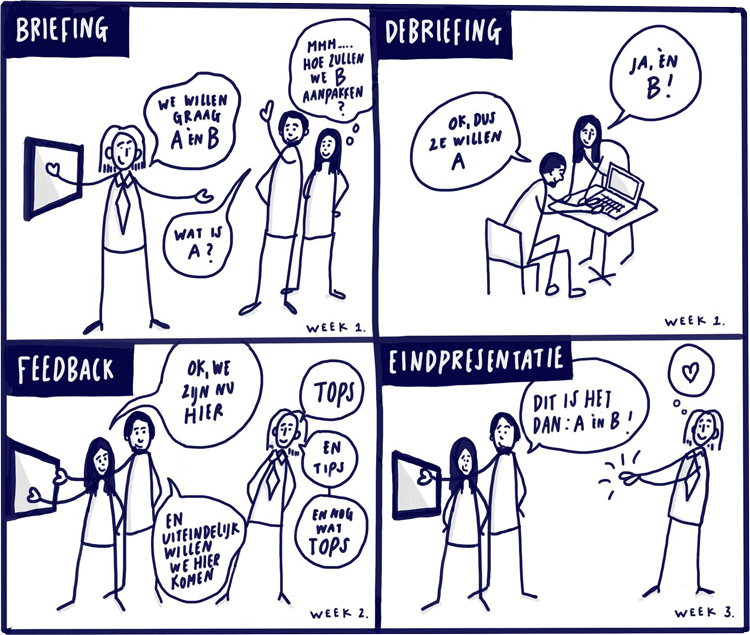

Samenwerken aan opdrachten
Samen met de opdrachtgever vertalen we opdrachten naar leertaken. Student kiezen gedurende een sprint aan welke opdrachten zijn gaan werken. Tijdens de sprint volgen de studenten en opdrachtgevers een aantal vaste rituelen, die we hieronder beschrijven.
Studenten en opdrachtgever werken samen aan de leertaken / opdrachten. Onderstaande rituelen passeren tijdens elke sprint de revue.
Voor alle rituelen geldt:
- Studenten werken individueel of samen aan een opdracht. Onderstaande rituelen zijn gezamenlijke sessie plaats, ook als studenten individueel aan de opdracht werken.
- Studenten nemen het initiatief voor de planning van de rituelen.
- De rituelen worden in principe 's middags gepland, omdat studenten 's ochtends les krijgen.
- Naast de vaste rituelen, kunnen er in overleg extra sessies worden gepland.
# Briefing
Op elke eerste maandag van de sprint krijgen de studenten in de ochtend een kickoff college waarin het thema van de betreffende sprint wordt toegelicht. De studenten kiezen na het college en opdracht en maken als team (ook als ze individueel werken) een afspraak met de opdrachtgever voor de briefing diezelfde middag. De opdrachtgever licht tijdens de briefing, voorkeur de opdracht toe. Ook maken de studenten en opdrachtgever afspraken over de planning van de debriefing, feedbacksessie en eindpresentatie(s).
# Debriefing
In de debriefing geven de studenten hun interpretatie van de briefing en wijden uit over de richting van de oplossing. In overleg kan de debriefing een live sessie zijn, of een schriftelijke overdracht. Studenten presenteren een gemeenschappelijke debriefing, ook als ze individueel werken aan de opdracht.
# Feedbacksessie
Tijdens een feedbacksessie laten studenten de voortgang van de opdracht zien en geeft de opdrachtgever inhoudelijke feedback op het werk. De vorm waarin de feedbacksessie plaatsvindt staat vrij en is in overleg. Aan de hand van de feedback kunnen de studenten doorwerken naar de eindoplevering van de opdracht.
# Oplevering
Aan het eind van de sprint presenteren de studenten, bij voorkeur op locatie, het eindresultaat en leveren het project op via GitHub. Bij de eindoplevering hoort een presentatie van het prototype en het delen van de bevindingen. Tevens worden aanbevelingen gedaan voor een eventueel vervolg voor het project.